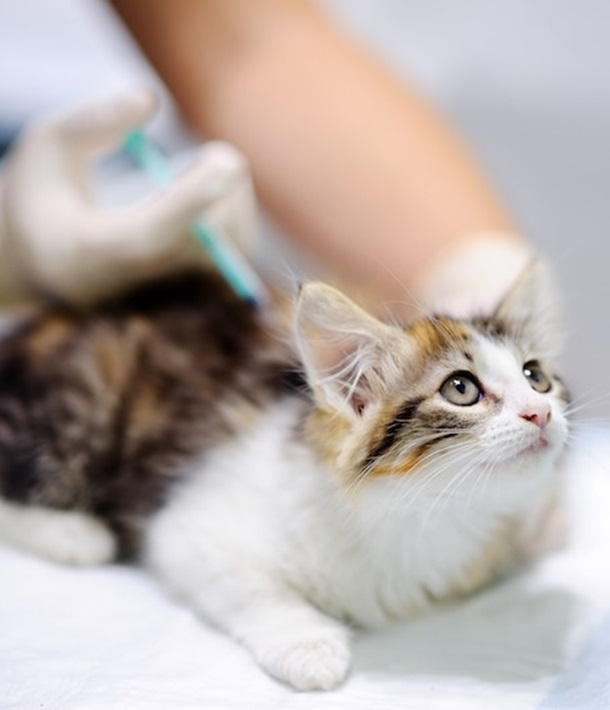
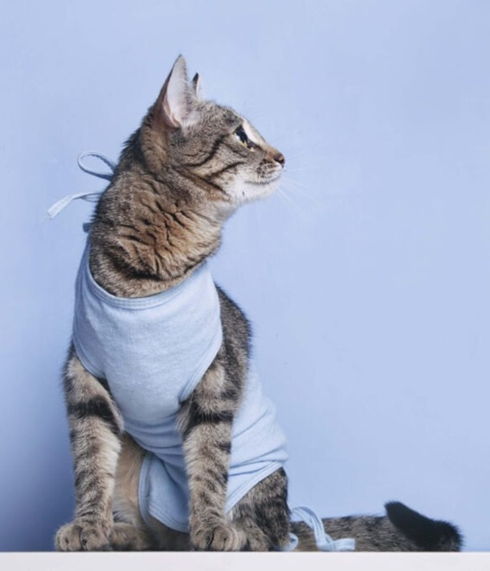
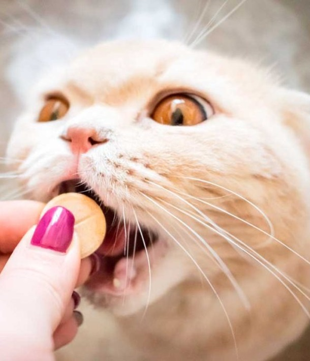

A saúde dos gatos é uma preocupação constante para seus donos. Esses adoráveis felinos merecem cuidados especiais para viverem uma vida longa e saudável. Aqui estão algumas informações importantes sobre a saúde dos gatos:
Depressão Felina:
- Os gatos também podem sofrer de depressão.
- Fique atento a sinais como mudanças no comportamento, apatia e isolamento.
- Ofereça carinho, brincadeiras e um ambiente estimulante para prevenir e tratar a depressão felina.
Vacinação:
- A vacinação é essencial para proteger os gatos contra doenças infecciosas.
- Algumas vacinas importantes incluem a raiva, a calicivirose, a rinotraqueíte e a panleucopenia.
- Consulte um veterinário para criar um plano de vacinação adequado.

Castração:
- A castração é recomendada para controlar a população de gatos e prevenir doenças.
- Tanto gatos machos quanto fêmeas podem ser castrados.
- Converse com um profissional para entender os benefícios e o processo.
Bem-Estar Geral:
- Mantenha o ambiente limpo e seguro para o seu gato.
- Cuide das unhas, escove o pelo e forneça uma dieta balanceada.
- Observe qualquer mudança no comportamento ou sintomas incomuns.

Doenças comuns:
- Alguns problemas de saúde frequentes em gatos incluem:
- Diarreia: Pode indicar problemas maiores.
- Toxoplasmose: Causada por um parasita e pode afetar humanos também.
- Cistite: Inflamação da bexiga.
- Febre: Sintoma de infecções ou inflamações.
- Diabetes: Requer diagnóstico e tratamento adequados.

Lembre-se de que cada gato é único, e um acompanhamento veterinário regular é fundamental para garantir sua saúde e felicidade! 🐾